로그아웃 토스트와 로그인 화면
Windows Edge에서 계정 화면의 로그아웃 버튼을 누른 직후를 캡처했어요. 이미지를 누르면 원본 크기로 열려요.
로그아웃 직후 움직임
1440px · 밝은 화면

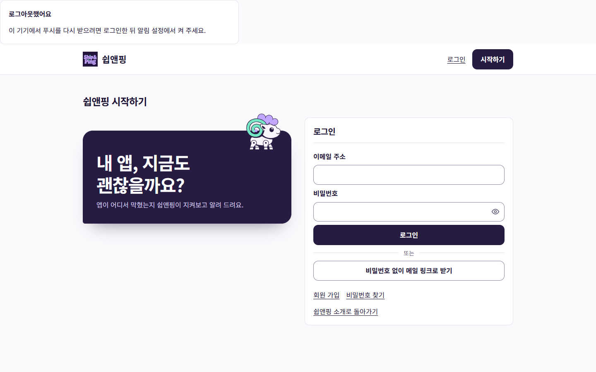

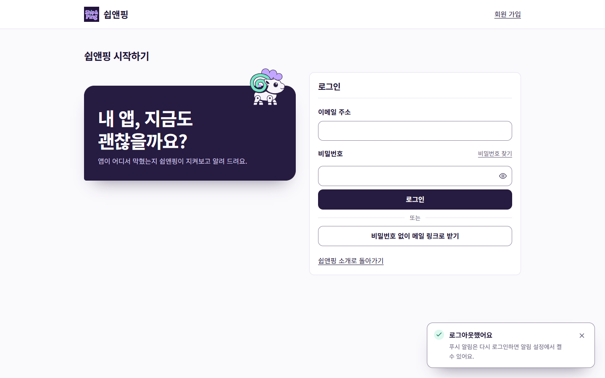
1440px · 어두운 화면

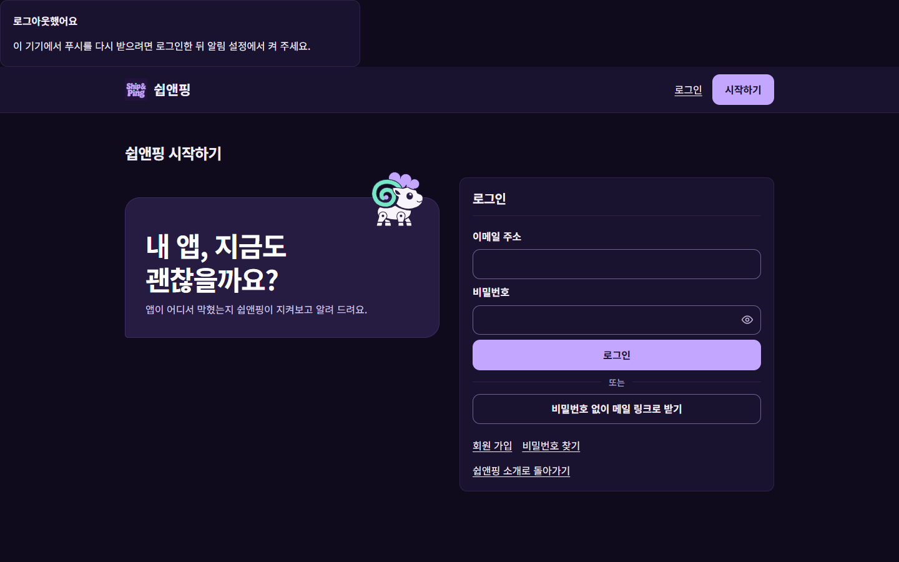

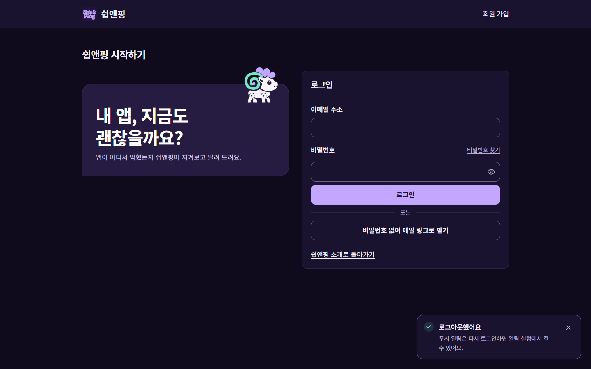
390px · 밝은 화면

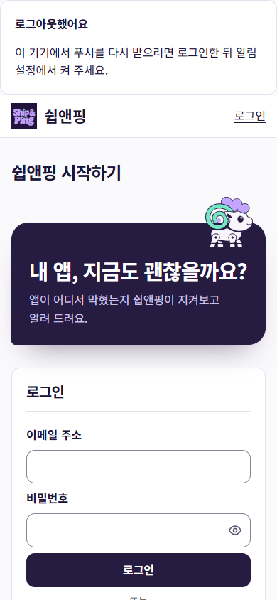

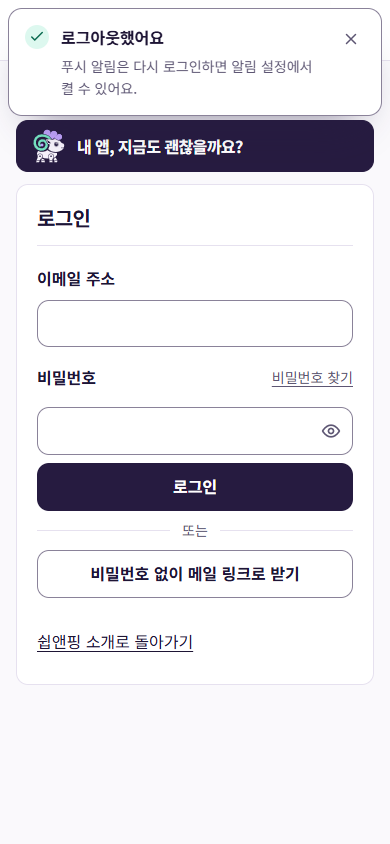
390px · 어두운 화면

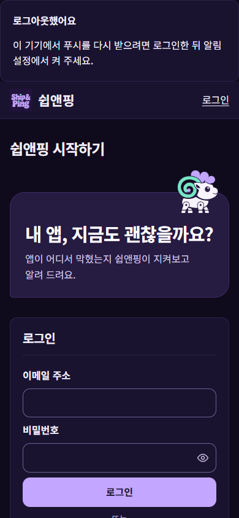

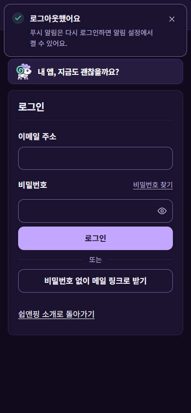
390px · 알림의 문제 링크로 연 로그인

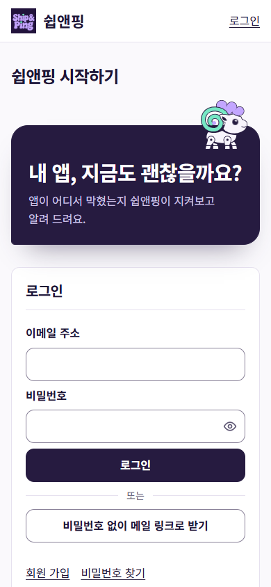

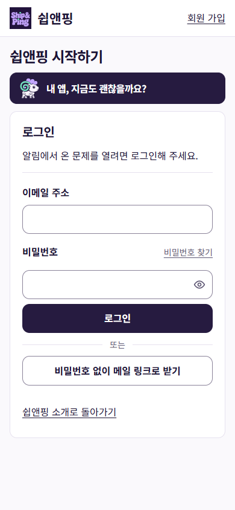
390px · 회원 가입

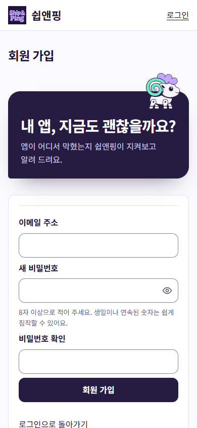

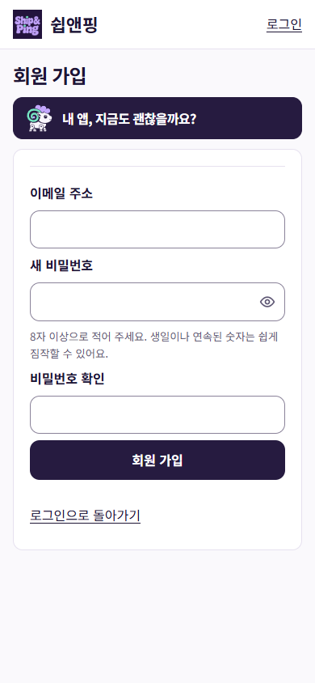
390px · 비밀번호 찾기

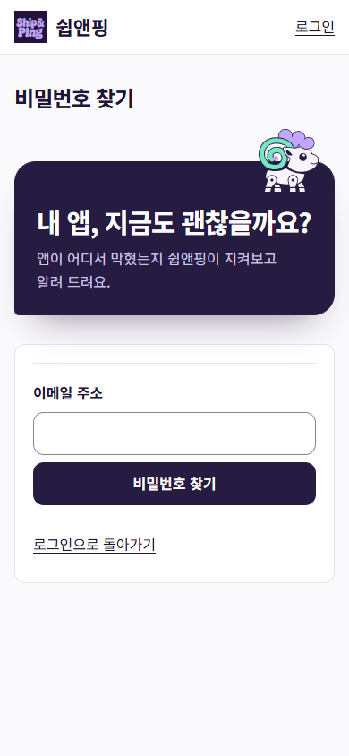

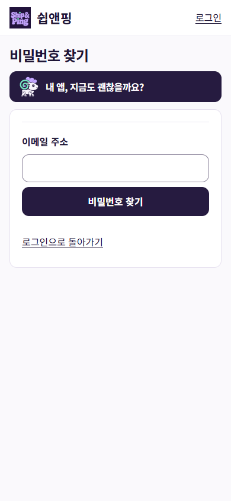
390px · 이 기기만 로그아웃 · 200% 확대

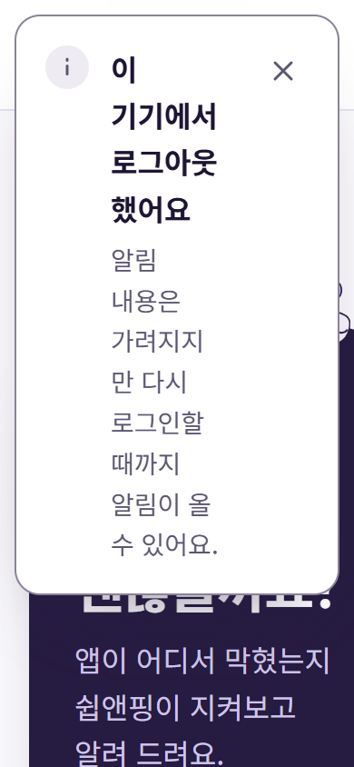

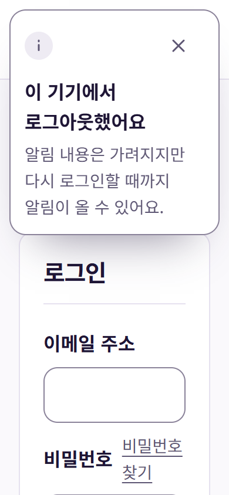